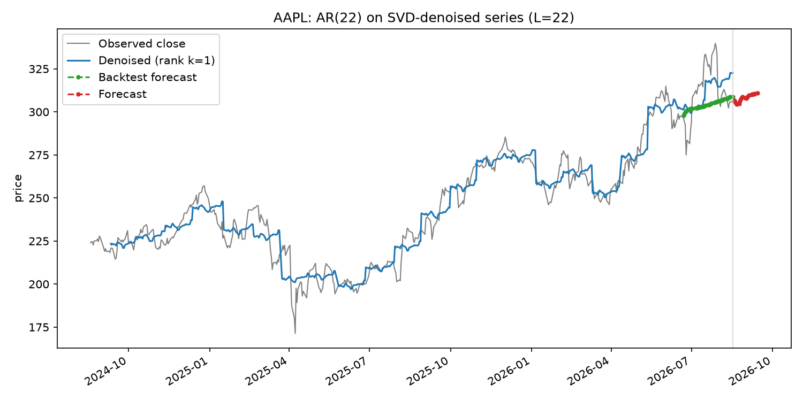
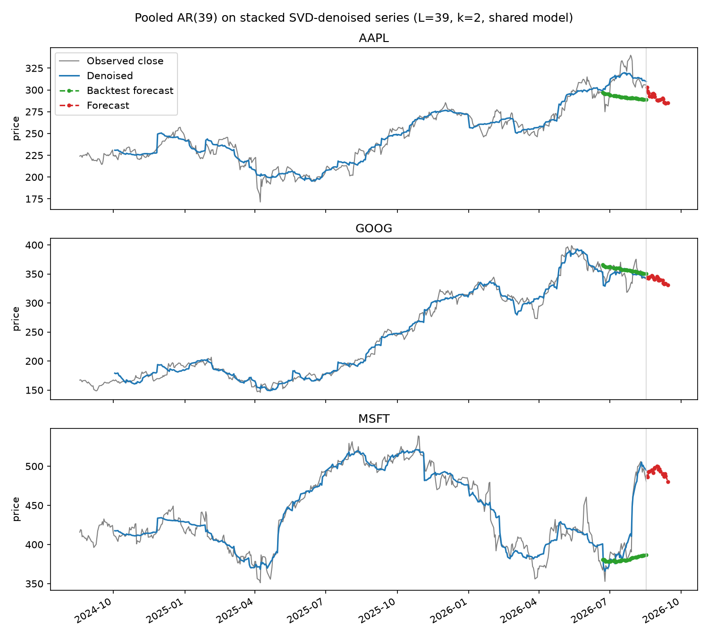

SVD-Denoised Autoregressive Forecasting¶
Related to
This grew out of experimenting with the Page-matrix SVD technique in Multivariate Singular Spectrum Analysis (Page Matrix SVD). It isn't from that paper — it's a simpler practical variant — but reuses its denoising step.
The idea¶
The paper's forecasting model is fit on non-overlapping pages: with page length \(L\), a series of length \(T\) gives only \(T/L\) training examples, each contributing one (features, target) pair. That's a small training set, and it ties the regression window to \(L\) (chosen for denoising, not forecasting).
This variant separates the two concerns:
- Denoise the series with the same Page-matrix SVD / Hard Singular Value Thresholding as before — unchanged.
- Fit a plain autoregression on the denoised series: predict \(v(t)\) from \(v(t-w), \dots, v(t-1)\) by ordinary least squares, using every overlapping window of length \(w\) as a training example. For \(T=500\) and \(w \approx 20\), that's roughly 480 overlapping training examples instead of ~20 non-overlapping pages — much more data for the same regression, and \(w\) is now a free parameter independent of the denoising window \(L\).
Denoised for fitting, raw for forecasting. The AR coefficients are fit on the denoised series, so they benefit from the same noise reduction the paper's model gets. But the actual forecast is seeded with raw recent prices, not denoised ones: the last few points of any Page-matrix reconstruction are the least reliable (there's no future data yet to smooth them with — visible as the ragged right edge of the blue line in every plot in these notes), so denoised values there would hand the model inputs unlike anything it saw during training. This split — fit on smoothed history, forecast from the raw, most-recent boundary — is the same thing classical (single-series) SSA forecasting has always done; it isn't a shortcut specific to this variant.
def fit_ar_model(denoised, window):
windows = np.lib.stride_tricks.sliding_window_view(denoised, window + 1)
features, targets = windows[:, :-1], windows[:, -1]
beta, *_ = np.linalg.lstsq(features, targets, rcond=None)
return beta
def forecast(x, beta, horizon): # x is raw, not denoised
window_size = len(beta)
history = list(x[-window_size:])
predictions = []
for _ in range(horizon):
pred = np.dot(history[-window_size:], beta)
predictions.append(pred)
history.append(pred)
return np.array(predictions)
The multi-stock version keeps the paper's stacked Page matrix for denoising (so each stock's smoothing still benefits from shared structure across stocks), but pools overlapping windows from every (normalized) stock's denoised series into one shared regression, instead of stacking non-overlapping pages.
Code: svd_denoised_ar_stock_forecast.py ·
svd_denoised_ar_multi_stock_forecast.py ·
code/README.md
for how to run either script, including the same --backtest-days option
used below.
Output: single stock¶

Backtesting AAPL (40 held-out trading days) gives RMSE 17.0 here, versus 19.2 for the paper's page-wise regression on the same data and window — a modest improvement, consistent with having roughly 20x more (overlapping) training examples to fit the same number of coefficients from. The forecast itself is also visibly more conservative: it oscillates near the last price rather than extrapolating a steep trend, likely because pooling many overlapping windows averages out more of the short-term drift that a handful of non-overlapping pages can't.
Output: multiple stocks¶

Same story for AAPL and GOOG. MSFT is the interesting case: the held-out 40 days include a sharp earnings-driven jump, and the backtest forecast (green) stays essentially flat while the actual price (gray) jumps well above it. This isn't a bug or a tuning miss — a model built from a couple of low-rank trend directions and a linear autoregression has no mechanism to anticipate a discrete news event; it can only extrapolate the smooth structure it was shown. It's included here deliberately, as a concrete reminder of what this whole family of techniques (the paper's version too) can't do, not just what it can.